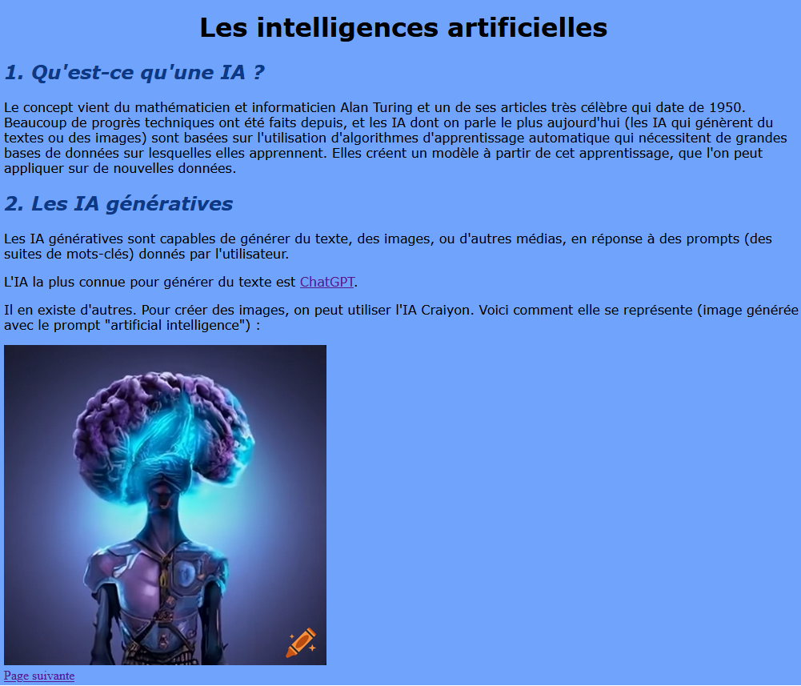

II. Les langages HTML et CSS¶
Cours : le HTML¶
A. Les bases du HTML¶
Définition
Le langage HTML (HyperText Markup Language) sert à définir le contenu et la structure de la page Web. Il sert à présenter de l'information, pas à faire des calculs comme Python !
A.1. Utilisation de balises¶
C'est un langage de balisage, c'est-à-dire basé sur l'utilisation de balises : des éléments placés entre < et > et associés à des fonctions différentes.
Exemple :
Code
<h1>Voici mon titre !</h1>
<p>J'écris ensuite un <strong>paragraphe</strong>.</p>
Ce code utilise 3 balises:
h1indique un titre principal (il en existe pour différents niveaux :h2,h3,...),pcorrespond à un paragraphe,strongfait apparaître le texte en gras (italique :em).
Chacune est ouverte : <balise1> puis fermée </balise1> au fur et à mesure.
L'ordre dans lequel on ouvre et on ferme les balise a de l'importance. Il n'aurait pas été possible, par exemple, d'écrire :
Code
<h1>Voici mon titre !</h1>
<p>J'écris ensuite un <strong>paragraphe</p>.</strong>
p ayant été ouverte avant strong, elle doit être refermée avant également.
A.2. Les attributs¶
Définition
On peut rajouter des attributs aux balises, permettant de leur rajouter des propriétés.
Exemples :
- la balise
apour les liens hypertextes, l'attributhrefindiquant la localisation de la page à lier :
Code
<a href="https://openclassrooms.com/fr/"> OpenClassrooms </a>
- la balise
imgpour insérer une image, l'attributsrcindiquant où se trouve l'image à afficher :
Code
<img src="ascii.png" alt="code_ascii"/>
Remarque 1
img est une balise à la fois ouvrante et fermante (auto-fermante). Il en existe d'autres, comme la balise br qui sert à sauter des lignes, et s'utilise de la même façon.
Remarque 2
Les chemins vers les ressources peuvent être relatifs ou absolus. Elles peuvent être stockées localement ou bien accessible sur le Web grâce à une URL.
- Les attributs
idetclasspermettent d'identifier un seul (pourid) paragraphe, titre, ou autre balise, parmi les autres, ou bien un groupe (pourclass) parmi l'ensemble :
Code
<h1>Voici mon titre !</h1>
<p id="paragraphe1">J'écris ensuite un <strong>paragraphe</strong></p>.
Cela va permettre ici, avec les autres langages du Web, de donner une représentation différente à ce paragraphe uniquement.
B. Une page minimale¶
Code
<!doctype html>
<html lang="fr">
<head>
<meta charset="utf-8">
<title>NSI - Le Web</title>
</head>
<body>
<h1> Le HTML </h1>
<p> Voici le contenu de ma page sur le HTML.</p>
</body>
</html>
Relever les différentes balises et indiquer leur fonction.
| Balise | Fonction |
|---|---|
html |
délimite le code en html |
head |
définit l'entête de la page |
meta |
permet de définir l'encodage utilisé pour le texte avec l'attribut charset |
title |
définit le titre en haut de la barre de navigation |
body |
correspond au corps de la page |
Cours : Le CSS¶
A. Les bases du CSS¶
Définition
Le CSS (Cascading Style Sheet) permet de mettre en forme une page Web.
Le code en CSS peut s'écrire à l'intérieur d'une page en HTML, ou bien dans un fichier séparé. Pour plus de clarté, on préfère cette deuxième solution.
Dans un fichier en .css, on écrit le code suivant :
Code CSS
h1 {
text-align: center;
background-color: red;
}
p {
font-family: Verdana;
color: black;
}
.special {
color: blue;
font-size: 25px;
font-style: italic;
}
Il est associé au HTML suivant :
Code HTML
<h1> Présentation</h1>
<p> Voici ma page de présentation.</p> <br/>
<p class="special"> Elle est très spéciale !</p>
Quelle est la structure utilisée ?
A la suite soit du nom d'une balise, soit de celui d'une classe (précédée d'un .), on donne entre accolades des valeurs pour différentes propriétés, qui modifient l'apparence du contenu de la balise.
Comment s'attend-on à voir apparaître les titres de niveau 1 ?
Ils doivent apparaître centrés et sur un fond de couleur rouge.
Comment s'attend-on à voir apparaître chacun des paragraphes ?
Le premier doit apparaître dans la police Verdana, en noir. Le deuxième est associé à la classe special et apparaîtra en bleu, en italique et en 25px.
B. Lier CSS et HTML¶
Pour que le code précédent s'applique à notre texte, il faut lier le fichier HTML et le fichier CSS.
On propose le fichier HTML suivant :
Code
<!doctype html>
<html lang="fr">
<head>
<meta charset="utf-8">
<title>NSI - Le Web</title>
<link rel="stylesheet" href="style.css">
</head>
<body>
<h1> Le CSS </h1>
<p> Voici le contenu de ma page sur le CSS.</p>
</body>
</html>
Entourer la ligne qui a changé, par rapport au fichier de base vu dans la partie sur le HTML.
Il s'agit de la 3ème ligne de l'entête.
Quel est le nom de la balise utilisée pour relier le fichier CSS au fichier HTML ? Quels sont ses attributs ?
Il s'agit de la balise link dont les attributs sont rel (donne des informations sur le type de la ressource) et href qui indique le chemin vers le fichier .css.
Exercices¶
Exercice 1 : Ressources et chemins¶
J'écris un fichier HTML index.html stocké selon la hiérarchie suivante (on suppose ici que Mon_dossier est la racine):
graph TB
G[Mon_dossier] --> D
G --> I[Images]
D[Code] --> A(page.html)
D --> C(index.html)
D --> E[style]
E --> F(moncss.css)
I --> H(monimage.jpg)-
Quel(s) code(s) affichera bien l'image
monimage.jpg?<img src='monimage.jpg'><img src='Mon_dossier/Images/monimage.jpg'><img src='Code/Mon_dossier/Images/monimage.jpg'>
-
Quel(s) code(s) permettra de bien relier ma page à
moncss.css?<link rel="stylesheet" href="style/style.css"><link rel="stylesheet" href="style/moncss.css"><link rel="stylesheet" href="Mon_dossier/Code/style/moncss.css">
-
Quel code faut-il écrire pour insérer
monimage.jpgdans la pagepage.htmlet la relier àmoncss.css?
Exercice 2 : Liste à puces¶
Pour créer une liste à puce, il faut utiliser deux balises : ul indique le début (balise ouvrante) et la fin (balise fermante) de la liste, alors que li délimite chacun de ses éléments.
Ecrire le code permettant d'afficher sous forme de liste à puce les premiers vers du poème "Le chat" de C. Baudelaire :
- De sa fourrure blonde et brune
- Sort un parfum si doux, qu'un soir
- J'en fus embaumé, pour l'avoir
- Caressée une fois, rien qu'une.
Exercice 3 : Différencier des paragraphes¶
Ecrire les codes HTML et CSS permettant d'afficher un paragraphe "Ce paragraphe est noir" en couleur noire et en police Verdana, alors que le paragraphe "Ce paragraphe est rouge." doit être rouge et en police Arial.
TP : HTML et CSS¶
A. Préparation du répertoire de travail¶
- Ouvrir l'explorateur de fichiers de votre ordinateur, et aller dans votre espace personnel en cliquant sur
Ce PC, puis surEspace Personnel Prénom NOMavec votre prénom et nom. -
Aller dans les
Documents, puis créer un dossierNSIet un dossierseq0dansNSI. Vous devez obtenir l'arborescence suivante :graph TB G[Ce PC] --> D D[Espace Personnel *Prénom* *NOM*] --> A A[Documents] --> B[NSI] D --> C[Images] D --> E[Musique] B --> F[seq0] -
Ouvrir le fichier
htmlqui servira de base à vos pages : base.html - Une page blanche s'affiche : faire un clic droit, puis
Enregistrer sous. - Sélectionner le dossier
seq0, et l'enregistrer souspresentation.html. - Depuis l'explorateur de fichiers, faire une copie de
presentation.html(dans le même dossier), et le nommeravis.html. - Ouvrir vos 2 fichiers avec votre éditeur de texte (Notepad++ ou Bloc-notes).
B. Les fichiers HTML¶
Sur ces deux pages HTML, vous allez présenter un film de votre choix sur la page presentation.html, et donner un (court) avis sur le film sur la page avis.html. Vous allez remplir le corps de vos deux pages Web avec les éléments suivants :
1. Des titres de différents niveaux (balises <h1>, <h2>,...), du texte sous la forme de paragraphes (<p>) et de liste (<ul>) d'éléments.
2. Des images (balise auto-fermante <img .../>).
3. Sur chaque page, un lien hypertexte vers l'autre page (balise <a href=...>).
4. Un lien hypertexte vers un autre site web (idem).
5. Les mots-clés doivent être en gras ou bien en italique (<strong> et <em>).
6. Une vidéo embarquée Youtube contenant la bande-annonce du film.
Indications
Pour la vidéo Youtube :
- Aller sur le site de https://youtube.com et trouver la vidéo de votre choix,
- cliquer sur "Partager" puis sur "Intégrer",
- copier/coller le code HTML qui s'affiche (délimité par une balise <iframe>) dans le corps de votre page.
Pour tout le reste, se référer à la fiche mémo distribuée et, bien sûr, au cours.
Exemple de rendu :
C. La feuille de style¶
Préparation
- A partir de votre éditeur de texte, créer un nouveau fichier.
- L'enregistrer sous
style.cssdans votre dossiersite_web.
Pour rajouter du style à vos pages, il faut définir la feuille de style style.css.
-
Rajouter la ligne qui permet de lier un fichier
.htmlà un fichier.cssdans l'entête de vos deux fichierspresentation.htmletavis.html. -
Définir un style pour vos pages.
Vous allez utiliser au moins 5 des propriétés répertoriées dans le tableau suivant (libre à vous d'en utiliser plus, ou d'autres !) :
| Propriété | Description | Valeurs possibles |
|---|---|---|
font-family |
police du texte d'un élément | Arial, Verdana, Sans serif,... |
font-style |
permet de mettre en italique | italic, oblique, normal |
color |
couleur du texte d'un élément | en anglais (red), en hexadécimal (#000000), en RGB (rgb(255,255,255)) |
background-color |
couleur de fond 'un élément | comme pour color |
width, height |
respectivement largeur et hauteur d'un élément | comme pour font-size |
background-image |
image d'arrière-plan | url("../chemin_vers_ressource") |
Indications
Rappelez-vous que vous pouvez sélectionner les types de balises (h1, h2, p...) ou bien les éléments d'une classe en rajoutant cet attribut. Vous pouvez ensuite appliquer un style à certains éléments d'un type, ou bien à un seul élément.
Exemple de rendu :
D. Dossier compressé¶
Vous allez me partager les différents fichiers de votre site en créant une archive, et l'application Casier de l'ENT.
- Depuis l'explorateur de fichiers aller dans votre dossier
NSI. - Faire un clic droit sur
seq0puis cliquer surCompresser dans un fichier zip. - Renommer l'archive en
site_web_prénom_NOM.zipen remplaçantprénometNOMpar votre prénom et votre nom. - Depuis l'ENT, se connecter à l'application
Casier. Elle sert à partager des ressources avec vos enseignants. - Cliquer sur
Déposer dans un casier. Cliquer surParcourir, et trouver votre fichiersite_web_prénom_NOM.zipsur votre machine. Dans la partieDestinatairerechercherTREBAULet sélectionner le profil de votre enseignante. Cliquer surEnvoyer.
TP : Liens et images¶
-
Télécharger l'archive suivante : Archive
-
La décompresser dans un dossier que vous nommez
site_ia, à placer ainsi dans votre arborescence de fichiers :graph TB G[Ce PC] --> D D[Espace Personnel *Prénom* *NOM*] --> A A[Documents] --> B[NSI] D --> C[Images] D --> E[Musique] B --> F[seq0] F --> H(site_ia) -
L'image de la page
index.htmlne s'affiche pas. Localiser la balise qui permet de l'afficher, et modifier le chemin vers la ressource pour qu'elle s'affiche. -
La feuille de style n'est pas appliquée aux deux pages HTML. Rajouter la ligne qui permet de faire le lien entre le fichier
.csset les deux pagesindex.htmletcritique.html. Le style appliqué à la pageindex.htmldonne le rendu suivant :
-
On doit pouvoir naviguer de la page
index.htmlà la pagecritique.htmlet réciproquement. Corriger le code des balises correspondantes sur chacune des deux pages pour que ce soit possible. -
Lire le contenu des pages, c'est instructif ! (mais ne tardez pas à passer à la suite)